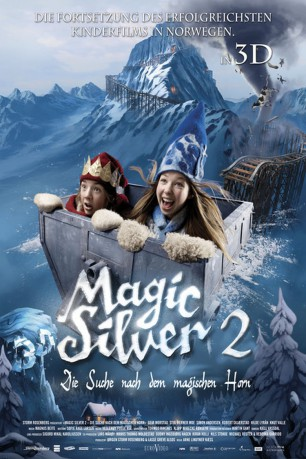

#8280 Magic Silver 2 - Die Suche nach dem magischen Horn
Alternativ: Magic Silver II (Englischer Titel)
 
 IMDB-Wertung: 5.0 / 10
IMDB-Wertung: 5.0 / 10  Metascore: 0
Metascore: 0 
Das Abenteuer geht weiter. Hoch oben im Blauen Berg regiert nun die junge Königin Blaurose. Doch mit der Zeit wird sie der Regeln und Abgeschiedenheit der Gemeinschaft der Blauen Wichtel überdrüssig. So eilt sie gleich zur Hilfe, als ihr zu Ohren kommt, dass eine Gletscherschmelze das Tal des Blauen Berges und die dort lebenden Roten Wichtel bedroht. Gemeinsam mit Dreng, dem König der Roten Wichtel, begibt sie sich auf die Suche nach dem magischen Horn. Denn nur dieses geheimisvolle Instrument vermag die Schmelze zu verhindern und kann somit die Roten Wichtel retten.
Jahr: 2011
Dauer: 84 Minuten
FSK: 0
Land: Norwegen Studio: EuroVideoTonspuren:
Untertitel:
Auflösung: 1080p (1920x1040) Größe: 6717 MB
Genre: Fantasy, Familie
Regisseur: Arne Lindtner Næss
Drehbuch: Gudny Hagen
Soundtrack: Magnus Beite
Darsteller:
 Per Christian Ellefsen als Rimspå
Per Christian Ellefsen als Rimspå Jeppe Beck Laursen als Ullkallen
Jeppe Beck Laursen als Ullkallen- Lena Meieran als Ullmøya
- Ane Viola Semb als Fjellrose
- Johan Tinus Lindgren als Dreng
- Toralv Maurstad als Mosetussen
- Elsa Lystad als Gamlemor
- Robert Skjærstad als Nissefyken
- Geir Morstad als Kullbaronen
- Stig Werner Moe als Mons
- Simon Andersen als Pilten
- Knut Walle als Nissefar
- Hilde Lyrån als Nissemor
- Lillian Lydersen als Blåværskona
- Nikoline Ursin Erichsen als Tufsa
- Simen Bakken als Erke
- Torkil Høeg als Erkes stemme
- Simen Velle als Ullbror
- Andreas Nodland als Ullgutten
- Iben Vagle als Ulljenta
- Anna Celine Bredal als Edel
- Sindre Slorafoss als Odel
- Sidney Louise Lange als Adel
- Inger Teien als Møllekona
- Marie Risan als Kokka
- Finn Schau als Fortellerstemme
Datei: X:\2-Dilogie(G-M)\Magic Silver\Magic Silver 2 - Die Suche nach dem magischen Horn (2011, FSK0, 1920x1040).mkv seit 16.02.2018
Festplatte: HD Collection-2(A-Z)-3(A-M)
 Alle Filme aus Gruppe '2-Dilogie(G-M)\Magic Silver'
Alle Filme aus Gruppe '2-Dilogie(G-M)\Magic Silver'